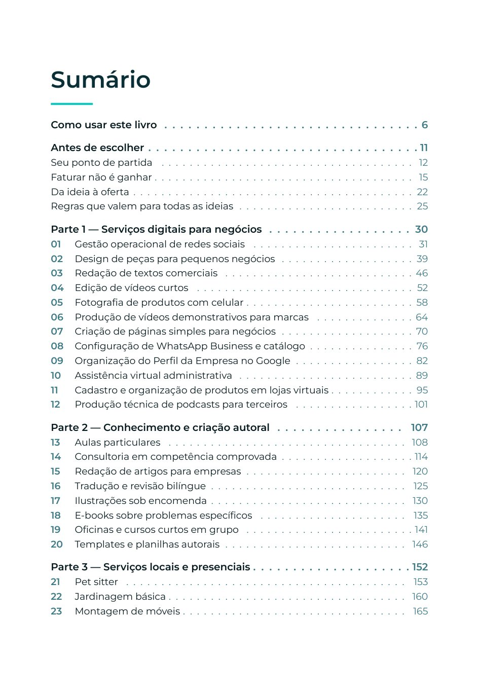
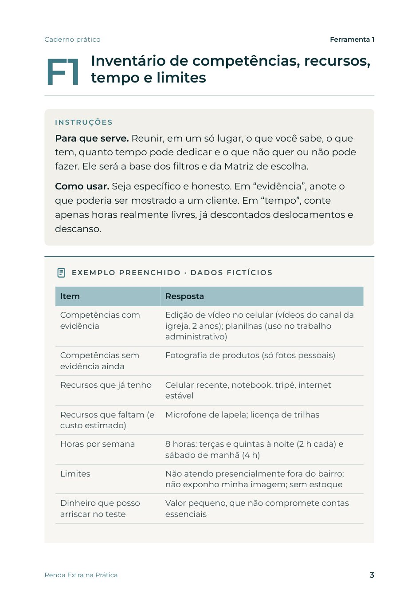
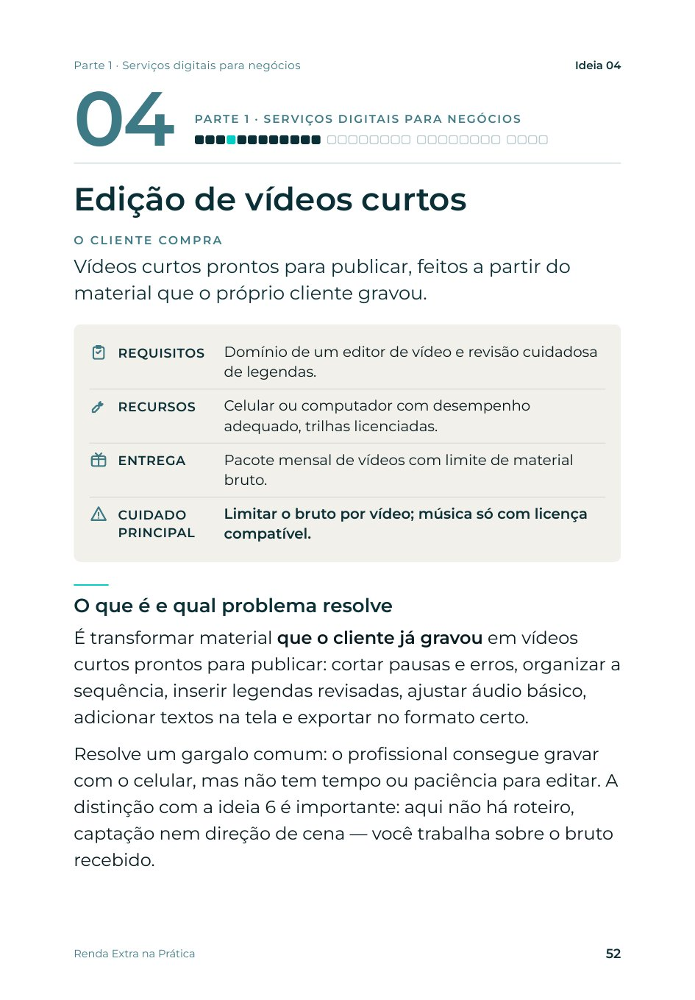

E-book de Matheus Orlando
Renda Extra na Prática
32 ideias para escolher sua atividade, montar uma oferta e buscar clientes.
Escolha uma atividade que caiba na sua realidade, monte uma oferta, faça as contas e teste com pessoas reais antes de ampliar.
Conteúdo educativo. Sem promessa de renda ou resultado garantido.

Listas de ideias param no nome da atividade.
Você quer começar uma atividade complementar, mas trava nas mesmas perguntas: o que eu faria, para quem, quanto cobraria e como encontraria o primeiro cliente? Listas de “ideias para ganhar dinheiro” costumam parar no nome da atividade. Faltam escopo, contas e um jeito respeitoso de abordar pessoas.
Ajudar a tomar uma decisão mais difícil e mais útil do que perseguir uma quantia por semana: escolher uma atividade que caiba nas suas competências, no seu tempo e no seu orçamento, transformá-la em uma oferta clara e testá-la com pessoas reais antes de assumir gastos maiores.
Da escolha à primeira oferta testada.
Ajuda a escolher
Inventário de competências, recursos, tempo e limites, um mapa das 32 ideias e uma matriz para comparar três opções.
Entrega ofertas para adaptar
Cada ideia traz um pacote inicial com quantidade, prazo, limites e o que fica fora.
Mostra a conta
A diferença entre faturar e ganhar: margem, saldo, horas, meta e preço mínimo, com uma planilha que faz as contas.
Prepara a conversa
Roteiro para entender o cliente antes de vender e mensagens de abordagem humanas, sem disparo em massa.
Ensina com decisões reais
Oito casos documentados, com fonte e data, analisados pelo que ensinam e pelo que não permitem concluir.
Organiza o teste
Um plano de 14 dias e um quadro para decidir entre manter, ajustar ou encerrar.
Um kit para aplicar, não só para ler.
- E-bookAs 32 ideias em quatro partes, oito casos documentados, bibliografia e sumário clicável (PDF).
- Caderno prático12 ferramentas com exemplos preenchidos, em versão para imprimir e preenchível (PDF).
- Planilha de cálculoCustos, preço mínimo, meta, capacidade, ficha técnica, controle de conversas e de caixa (.xlsx).
- Modelos editáveisFerramentas e mensagens em arquivo de texto para adaptar (.docx).


Páginas reais da amostra: sumário e Ferramenta 1, com exemplo de dados fictícios.
32 ideias em quatro campos de atuação.
Antes das ideias, quatro capítulos preparam a escolha: Seu ponto de partida, Faturar não é ganhar, Da ideia à oferta e Regras que valem para todas as ideias. Atividades que exigem formação ou habilitação deixam isso claro logo no início.
Serviços digitais para negócios12 ideias
- 01Gestão operacional de redes sociais
- 02Design de peças para pequenos negócios
- 03Redação de textos comerciais
- 04Edição de vídeos curtos
- 05Fotografia de produtos com celular
- 06Produção de vídeos demonstrativos para marcas
- 07Criação de páginas simples para negócios
- 08Configuração de WhatsApp Business e catálogo
- 09Organização do Perfil da Empresa no Google
- 10Assistência virtual administrativa
- 11Cadastro e organização de produtos em lojas virtuais
- 12Produção técnica de podcasts para terceiros
Conhecimento e criação autoral8 ideias
- 13Aulas particulares
- 14Consultoria em competência comprovada
- 15Redação de artigos para empresas
- 16Tradução e revisão bilíngue
- 17Ilustrações sob encomenda
- 18E-books sobre problemas específicos
- 19Oficinas e cursos curtos em grupo
- 20Templates e planilhas autorais
Serviços locais e presenciais8 ideias
- 21Pet sitter
- 22Jardinagem básica
- 23Montagem de móveis
- 24Organização de ambientes
- 25Babá qualificada
- 26Aulas de exercícios por profissional habilitado
- 27Limpeza e preparação de imóveis de temporada
- 28Suporte tecnológico básico
Produtos, revenda e encomendas4 ideias
- 29Brechó e consignação de roupas
- 30Revenda de usados em outras categorias
- 31Artesanato e personalizados por encomenda
- 32Alimentos por encomenda
Cada capítulo começa pelo que decide.
Exemplo real da ideia 04, Edição de vídeos curtos.
- O cliente compra
- Vídeos curtos prontos para publicar, feitos a partir do material que o próprio cliente gravou.
- Requisitos
- Domínio de um editor de vídeo e revisão cuidadosa de legendas.
- Recursos
- Celular ou computador com desempenho adequado, trilhas licenciadas.
- Entrega
- Pacote mensal de vídeos com limite de material bruto.
- Cuidado principal
- Limitar o bruto por vídeo; música só com licença compatível.
Oferta inicial, modelo editorial
Pacote de quatro vídeos verticais por mês, de até 60 segundos, a partir de até 20 minutos de bruto por vídeo, entrega em até 3 dias úteis e uma rodada de ajustes. Gravação, roteiro e publicação ficam fora e são orçados à parte.

Seis passos e doze ferramentas.
Escolher
inventário, mapa e matriz
Montar a oferta
escopo, limites e prazo
Calcular
custos, preço mínimo e horas
Conversar
entender antes de vender
Testar
14 dias de ações registradas
Avaliar
manter, ajustar ou encerrar
Caderno prático
- F1Inventário de competências, recursos, tempo e limites
- F2Mapa comparativo das 32 ideias
- F3Matriz para escolher entre três opções
- F4Roteiro de conversa com possíveis clientes
- F5Modelo de oferta em uma página
- F6Calculadora de custos, preço, meta e capacidade
- F7Mensagens de prospecção e acompanhamento
- F8Controle de conversas e propostas
- F9Checklist da primeira entrega
- F10Plano de teste em 14 dias
- F11Quadro de decisão: manter, ajustar ou encerrar
- F12Controle simples de caixa e pedidos
O teste de 14 dias é um calendário de ações, não um prazo para ganhar dinheiro. Se faltar habilitação ou requisito de segurança, ele vira preparação.
Para quem é
- Quem quer começar uma atividade complementar usando habilidades e recursos que já tem.
- Quem já presta algum serviço informalmente e quer organizar oferta, preço e abordagem.
- Quem prefere testar pequeno, registrar números e decidir com base no que aconteceu.
Para quem não é
- Para quem procura renda imediata sem trabalho, aposta financeira ou atalhos.
- Para quem quer disparo em massa, compra de seguidores ou de avaliações.
- Para quem precisa de orientação contábil, jurídica ou sanitária individual: o material indica onde buscá-la, mas não a substitui.
Treinamento em vídeo
Extensão proposta do e-book, em preparação: escolha da atividade, montagem da oferta, contas, abordagem de clientes e avaliação do teste.
Carga total, calendário de liberação e materiais são informados antes da contratação. O treinamento não substitui habilitação profissional nem consultoria individual.
Como o livro separa a informação
Fato documentado
Informação de fonte identificada — lei, documentação oficial de plataforma, reportagem —, com referência e data de consulta.
Recomendação editorial
Orientação do autor baseada em lógica de oferta, escopo e planejamento: sugestão para adaptar, não regra comprovada.
Perguntas frequentes
Limites da promessa
Material de finalidade educativa. Não garante renda, clientes, vendas, seguidores ou posição em buscas, e não substitui orientação profissional. Os exemplos numéricos são simulações fictícias. Os casos reais mostram decisões de outras pessoas, em outros contextos, e não são previsão de resultado.
O livro garante que vou ganhar dinheiro?
Não. Ele ajuda a escolher, estruturar e testar uma atividade com critério. Resultados dependem da sua competência, do seu tempo, da sua região, do mercado e de fatores que nenhum material controla.
Preciso de experiência?
Depende da ideia. Cada capítulo informa o que é exigido. Algumas atividades exigem formação ou registro profissional — por exemplo, aulas de exercícios físicos — e o livro deixa isso claro.
As ideias servem para MEI?
O livro não afirma que qualquer atividade pode ou não ser MEI. Ele orienta a consultar a lista oficial de ocupações e as exigências municipais na data da formalização.
Os casos são de alunos do autor?
Os casos não são de alunos do autor: são pessoas sem relação com ele, cujas histórias foram publicadas pela Agência Sebrae de Notícias ou em site profissional próprio, com fonte e data na bibliografia.
Preciso ler tudo?
Não. O livro foi feito para consulta: você preenche o inventário, escolhe até seis ideias e lê apenas esses capítulos.
É o mesmo livro do antigo “30 ideias”?
Não. É uma nova edição, reescrita com 32 ideias e foco em escolha, oferta e teste. A promessa antiga de uma quantia por semana não faz parte desta edição.
O e-book inclui consultoria individual?
Não. A leitura é educativa. Uma conversa individual ou acompanhamento tem escopo e contratação próprios.
Posso comprar o treinamento em vídeo agora?
Ainda não há checkout ativo nesta página. Disponibilidade, aulas liberadas e condições de acesso são informadas por e-mail.
Uma frente diferente das formações empresariais. Este conteúdo é educativo e individual. Os workshops e a consultoria atendem decisões de marca e marketing de empresas — conheça as formações.
Ficou alguma dúvida
sobre o material?
Escreva com o que você procura. A resposta indica o caminho mais adequado: leitura, treinamento ou nenhum dos dois.